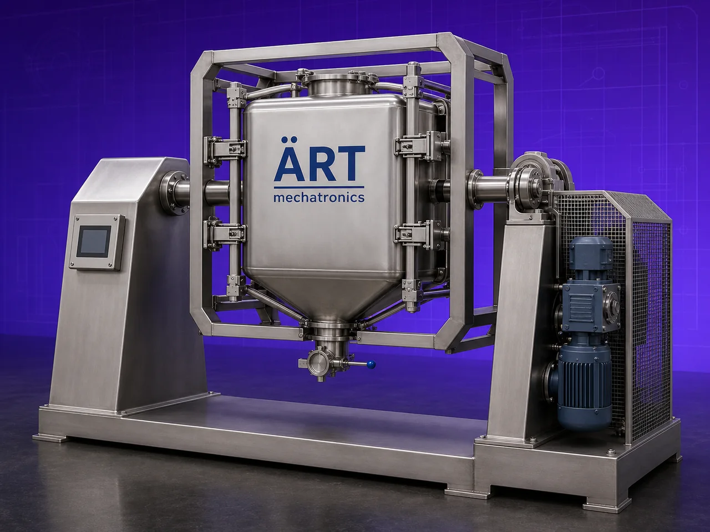

Capsule Mixer Machine (Pharmaceutical Powder Blending & Capsule Filling Preparation System)
A Capsule Mixer Machine, also known as a Capsule Blending Machine or Pharmaceutical Powder Mixer, is a specialized industrial mixing equipment designed for uniform blending of pharmaceutical powders, nutraceutical ingredients, herbal extracts, granules, and excipients before capsule filling processes.

About the Capsule Mixer
The machine ensures homogeneous mixing of active ingredients (API) and excipients, which is critical for maintaining:
- Accurate dosage
- Uniform capsule weight
- Consistent product quality
- Regulatory compliance
Capsule mixers are widely used in industries such as:
• Pharmaceutical manufacturing
• Nutraceutical production
• Herbal medicine processing
• Food supplement industries
• Healthcare product manufacturing
where precision powder blending and hygienic processing are essential.
The machine is designed for:
- Gentle mixing
- Uniform powder distribution
- Low heat generation
- Minimal product segregation
- GMP-compliant hygienic operation
ART Mechatronics offers high-performance capsule mixer machines, engineered for precision pharmaceutical blending, efficient batch processing, and reliable industrial performance.
One machine, many names
Buyers search for this equipment under many terms — we manufacture all of them:
Working Principle of Capsule Mixer Machine
are loaded into mixing chamber
Ensures homogeneous ingredient distribution
Types of Capsule Mixer Machines
Industries Using Capsule Mixer Machine
💊 Pharmaceutical Industry
- API blending
- Capsule powder preparation
🌿 Nutraceutical Industry
- Protein and supplement mixing
🌱 Herbal Medicine Industry
- Herbal powder blending
🍃 Healthcare Product Industry
- Nutritional formulations
Features & Advantages
- Uniform pharmaceutical powder blending
- Accurate dosage consistency
- Gentle low-shear mixing action
- Hygienic GMP-compliant construction
- Low contamination risk
- Easy cleaning and maintenance
- Suitable for sensitive pharmaceutical ingredients
- Efficient batch processing
- Reliable industrial performance
Technical Highlights
- Capacity: Lab scale to industrial production scale
- Construction: Stainless Steel (GMP compliant)
- Mixing Type: Gentle precision blending
- Operation: Manual / Automatic / PLC-based
- Drive: Motor with gearbox
- Discharge: Butterfly valve / pneumatic discharge
Turnkey Pharma Mixing Solutions
ART Mechatronics offers:
- Complete capsule mixing system design
- Integration with:
- Capsule filling machines
- Granulation systems
- Drying systems
- Dust control and vacuum systems
- Installation & commissioning
- After-sales service & AMC
Why Choose Art Mechatronics
- Expertise in pharmaceutical processing equipment
- GMP-compliant manufacturing standards
- Customized pharma mixing solutions
- Hygienic and reliable machine designs
- Proven industrial performance
Applications
- Pharmaceutical Manufacturing Units
- Nutraceutical Production Plants
- Herbal Medicine Processing Units
- Healthcare Product Manufacturing Facilities
Industries that use the Capsule Mixer
Related Mixing & Blending machines
Get pricing & specs for the Capsule Mixer
Share the product, target capacity, current process and plant location. These details help our engineers discuss the right machine or line configuration.
One partner, from design to start-up
ART Mechatronics designs, manufactures, installs and commissions your Capsule Mixer solution with regional presence in India, UAE and Thailand.